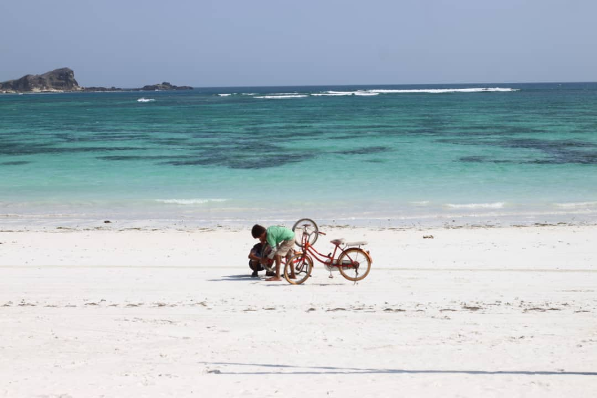
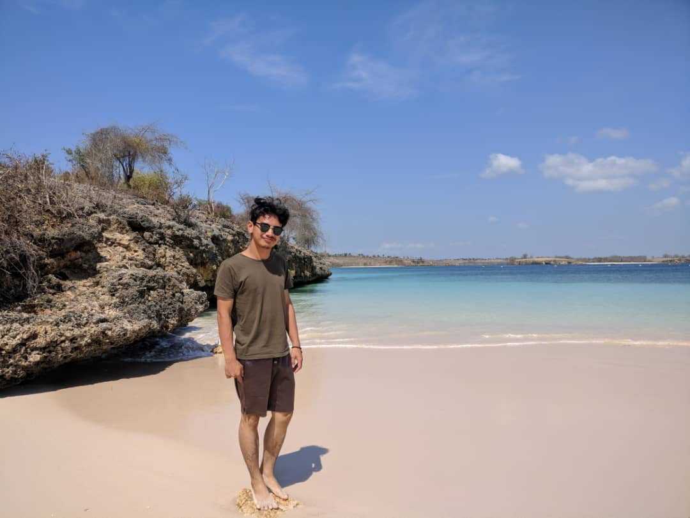
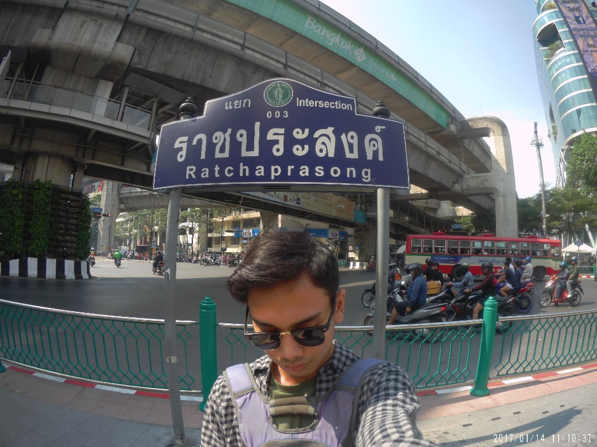

Travel
Lombok
I spent my free time for travel. I went to lombok last 2018 for a sort of theraupatic retreat for my self. Also to widen my perspective of the world and foreign cultures. I do embrace Lombok Local Cultures like: spearfishing, eating local chicken and eating with delicacy of soy sauce.
I also embrace the nature there. The sea was pure blue. I went there during dry season which made me tanned all over mybody after coming back from the trip.
Thailand
I did my solo travel trip to Thailand on December 2017. I was visiting Pratunam District, in the middle of Bangkok city. I used few modes of transportation: Tuk-Tuk, Grabcar , Train, Buses and also Taxi. The taxi was a nightmare, I almost got scammed. After a week there, I returned to Malaysia.
Pulau Pangkor
.jpeg)
This is my bagpacking trip to Pangkor Island. I had to take boat there for 30 minutes from the jetty. Everything went fine, upon arrival, I have rent a motorcycle to ease my transportation in the island. The water was calming and the people are welcoming.